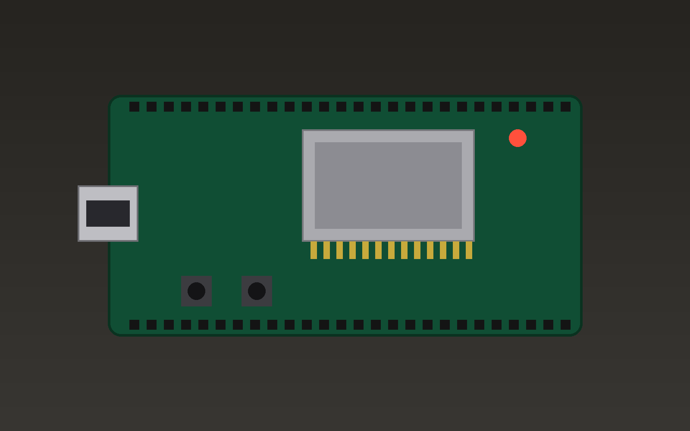

AI agents that flash, measure and test on their own
Workbench is an automated test lab
Let the machine do the boring work, and keep the overview yourself.

import serial
port = serial.Serial("/dev/ttyUSB0", 115200)
def wait_for(text, timeout=10):
line = port.read_until(text.encode(), timeout)
return text in line.decode()
assert wait_for("BOOT OK")
At 115200 baud, one byte takes about \(87\,\mu s\).
| Task | Manual | With agent |
|---|---|---|
| Flashing | 1 min | automatic |
| Reading logs | eyes on screen | continuous |
| Testing | when you remember | every build |
Questions? Comments? Let me know.